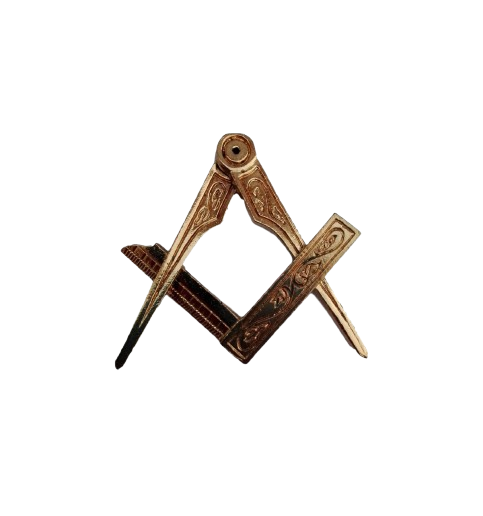

محمد بن موسى الخوارزمي المولود في خوارزم (أوزبكستان حاليًا)، القرن التاسع الميلادي و تكمن عظامته في تاسيس علم الجبر، وابتكر أساليب رياضية لحل المعادلات من الدرجة الثانية و ألّف كتاب "الكتاب المختصر في حساب الجبر والمقابلة"، الذي كان أساسًا لتطوير علم الجبر في أوروبا و منه جاءت الأرقام التي نستخدمها اليوم
المولود في حرّان (سوريا حاليًا) عام 826 م، وتوفي عام 901 م و هو مشهور لانه من كبار علماء الهندسة والفلك والرياضيات و طوّر نظرية الأعداد المتحابة، وكان له إضافات في الهندسة الإقليدية و ترجم أعمالًا يونانية قديمة وأضاف إليها شروحًا جديدة، مما ساعد في نقل علوم الإغريق إلى العالم الإسلامي وأوروبا
أبو الوفا محمد بن محمد البوزجاني المولود في بوزجان (إيران حاليًا) عام 940 م، وتوفي عام 998 م و هو من أوائل من أسّس علم المثلثات كعلم مستقل عن الفلك و طوّر دوال مثل الجيب و جيب تمام و وشرحها بطريقة دقيقة، كما أوجد طرقًا لحساب الزوايا و لّف كتاب "كتاب فيما يحتاج إليه الكتّاب والعمّال من علم الحساب"، والذي كان مرجعًا في الرياضيات التطبيقية